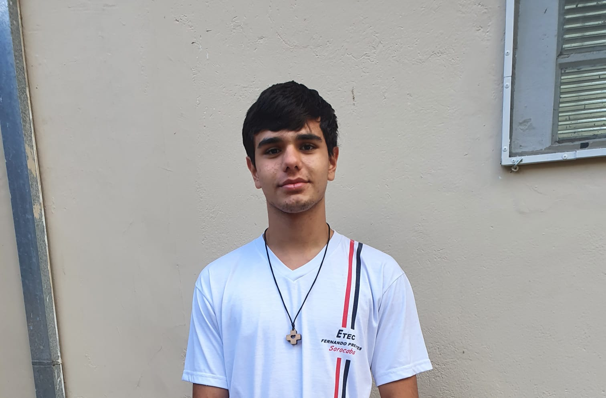

Sobre nós
Este projeto foi criando por alunos da ETEC Fernando Prestes, do primeiro ano do curso AMS de Análise e Desenvolvimento de Sistemas, para o Hackteen de 2025.
Como pode ser visto durante o uso do site, ele tem o intuito de auxiliar da organização dos estudos, oferecendo ferramentas que ajudam a lembrar de atividades, exercícios ou
outras tarefas importantes, criar anotações, visando facilitar a vida dos estudantes.
Membros
Paulo: dev. Frontend
Responsável por ajustes no HTML e por todo o JavaScript.

Pedro: dev. Frontend
Responsável pelo HTML e pela documentação do site.
Juliana: dev. Frontend e designer
Responsável pelo CSS.